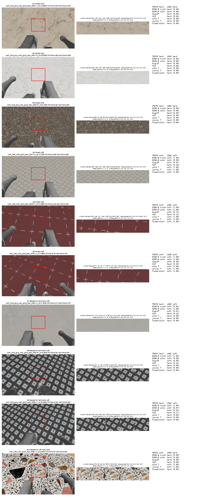
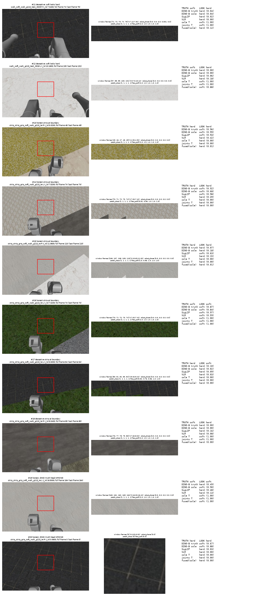

Re-checking the fixed-patch experiment
An independent re-check that did none of the work recomputed the numbers of the fixed-patch experiment with its own code, searched for leaks between training and test, ran its own small controls and looked at samples. Every number in the result tables reproduces. One control found a cue the report missed: the robot stands lower on soft floor.
In short
- 39 claims: 20 hold, 17 hold with caveats, 0 fail, 2 could not be verified. Every number in the five result tables reproduces to three decimals.
- No leaks. No episode in two splits, no test texture in training, no teacher that labelled an episode it had trained on.
- Not just colour. The mean colour of the patch alone scores 0.536; the ViT head scores 0.985.
- A cue without pixels. The robot stands about 6 mm lower on soft floor. A model with no image, reading only body state and episode data before the step, scores 0.957, and it is not fooled by deceptive looks. The vision heads do not use this cue, but the report never compared vision with such a baseline.
- Two intervals sit at the edge of 0 where the report gave a clear verdict, and the shuffled-label control is borderline rather than cleanly at chance.
How the re-check worked
- Own code. No metric code from the experiment was imported. Truth, look and texture were read from the raw step and look files; the splits were read raw.
- Intervals. 2,000 resamples of the test textures within each class, paired for differences.
- The experiment's own checks were re-run and passed (38, 259 and 17 tests, no failures). That is weak evidence, since the same people wrote them.
- Scope. 24 claims of the results page, 11 of the teachers page and 4 of the dataset page.
| Claims | Hold | Hold with caveats | Do not hold | Could not verify |
|---|---|---|---|---|
| 39 | 20 | 17 | 0 | 2 |
Reading the table. Nothing failed. The two claims that could not be verified are the frames-per-second figures (not re-timed on a shared GPU; the logged values match the table) and the shifted sole readout of the teachers (not recomputed; only the original check covers it). Most caveats concern what a number licenses, not the number itself.
Claims that needed a caveat
| Claim | Reported | Recomputed | Caveat |
|---|---|---|---|
| A: teachers tie | 0.985 / 0.985 / 0.984 / 0.985 | the same | A tie by construction: the label sets agree with truth on 98.8 to 99.7 % of training steps. |
| Shuffled control at chance | 0.565 ± 0.088 [0.490, 0.629] | 0.565 [0.479, 0.627] | Each seed is at chance under a texture-aware null (ranks 92, 93 and 50 %). The seed mean ranks at the 96.3rd percentile (null 95th: 0.559): borderline. |
| Stand/stop variant: sole minus joints | −0.013 [−0.038, +0.005] | [−0.041, +0.005] | Truth minus joints is −0.009 [−0.020, −0.000]: borderline, not "no". "No subset separates the teachers" rests on one subset with 169 training frames. |
| Frame label rule beats "next step" | 0.985 vs 0.959; sole 0.985 vs 0.973 | truth +0.027 [+0.002, +0.072] | Real for truth labels, not for sole labels: +0.012 [−0.002, +0.042]. |
| B: fused beats vision | +0.012 [+0.006, +0.022] | +0.012 [+0.005, +0.024] | The fused classifier answers after the step, so the timing is not like for like. It adds nothing over the sole alone: +0.000 [−0.003, +0.002]. |
| B: fused trusts the look | 0.514 ± 0.104 / 0.287 ± 0.003 | the same | Only partly true: sole-label seeds 0.42 / 0.50 / 0.63 against truth, 0.443 against the look. Two truth-label checkpoints were picked at epoch 1. |
| C: SigLIP below the ViT head | −0.010 [−0.021, −0.002] | [−0.024, −0.000] | Upper bound touches 0. Its winning wordings name the dataset's own material families, so it is zero-shot informed by the categories. The generic wordings score 0.39 / 0.41 on test. |
| C: Qwen2.5-VL-7B zero-shot | 0.668 [0.494, 0.834] | 0.668 [0.495, 0.840] | Validation 0.874 falls to 0.668 on test, because validation has only 8 textures. Two wordings give the same class on 99.7 % of validation frames. |
| C: held-out material family | 0.726 ± 0.047 | the same; 0.723 by touched family | Family is taken from the patch texture at the last frame, which differs from the touched region on 67 steps (carpet, main head: 0.982 becomes 0.999). 19 to 174 training frames per held-out family straddle a boundary. 1 to 5 test textures per family. |
| D: after the step | 0.997 / 0.992 / 0.996 | the same | The teachers read no image, so their deceptive score equals their honest score by construction. |
| E: honest strips | vision 71 / 72, sole 69, joints 66 | the same | Only 24 boundaries, all hard to soft. Pooling three seeds triples the count without adding independent cases. |
| E: vision is early | 75 % of boundaries, 1.33 steps | 0.75 / 1.33 | "A warning in time for a controller" is an interpretation; it was not tested. |
| Dataset textures | 13 / 4 / 19 hard, 12 / 4 / 20 soft | the same, no duplicate images | Validation has no asphalt, fabric, marble or tiles texture. |
Reading the table. The second and third columns differ only in the intervals, because the re-check drew its own resamples. Where its interval reaches 0 and the report called a difference real, or the reverse, this page and the results page follow the re-check. The other claims hold as stated, among them ViT-S equal to ViT-B (−0.001, [−0.005, +0.004]), every deceptive-look score, and that a head taught by the sole is fooled as much as one taught by truth (0.027 against 0.028, −0.001 [−0.006, +0.003]).
0.982 or 0.985?
One of the experiment's own checks reports 0.982 for the truth-label head, where the results say 0.985. Both are correct; they use different test sets. The check scores only the 35 honest test episodes (1,470 steps): truth labels 0.982, sole labels 0.980, shuffled 0.536. The results score those plus the honest look of the 85 deceptive test episodes (5,029 steps): 0.985. The re-check reproduced both.
Leaks and timing
- Splits. 0 episodes in two splits. The 8 validation textures are disjoint from the 25 test and the 39 training textures. The 72 trained head configurations hold 0 test episodes and 0 test textures, re-derived from the looks. Every training label comes from a training step, and every model choice was made on validation.
- Teachers. 0 of 273,660 teacher prediction rows came from a model whose training or early-stopping list held that episode. 0 of 60 teachers saw a test episode of this experiment. All 540 teacher episodes are G113. The sole teacher really reads only the 16 coarse features plus a validity flag.
- Zero-shot choices. The VLM wordings that lost on validation were never run on test frames, and the test pass ran once. SigLIP computed all three wordings on every frame; the one chosen on validation also wins on test, so the choice did not matter.
- Only the past. The re-check's own frame windows (frames before touchdown, last 5) equal the experiment's for all 10,899 validation and test rows. The frame at touchdown is excluded; the last frame lies 0.02 to 0.10 s before it. Rebuilding the answers from the stored per-frame probabilities changes no class.
- Short windows. No step lacks a frame, but 4.97 % of honest test steps have fewer than 5 earlier frames: 245 have one frame (mostly both feet settling at 0.08 s at the start of an episode, scored as steps) and 5 have two.
- The course clip. All 126 steps use the last frame before touchdown with the stated smoothing. 15 random steps read from the video panels match the per-step table in truth, vision, sole and joints (15 of 15).
Colour and no-pixel controls
Small models (logistic regression or gradient boosting, chosen on validation), trained on training steps with truth labels, with features averaged over each step's own five-frame window. Scored on the 5,029 honest test steps.
| Input | Honest looks | 95 % interval |
|---|---|---|
| DINOv3 ViT-B head on the patch (from the results) | 0.985 | [0.972, 0.993] |
| Mean RGB of the patch | 0.536 | [0.36, 0.74] |
| Colour statistics: RGB mean and spread, saturation, value, 8-bin histograms | 0.740 | [0.51, 0.93] |
| No pixels: trunk and camera height, pitch, roll, patch position, robot share, speed, side, step index, time | 0.957 | [0.938, 0.966] |
| Trunk height alone | 0.931 | – |
| Camera height alone | 0.904 | – |
| No pixels, without the two heights | 0.870 | – |
| Mean depth of the patch alone | 0.849 | – |
| Episode data alone: speed, side, step index, time | 0.840 | – |
Reading the table. Colour does not explain the ViT result: the ViT head beats mean colour by +0.45 and the colour statistics by +0.25, both with intervals that exclude 0, and mean colour gets 0 % on 6 of the 12 soft test textures (for example a carpet and a moss). The no-pixel rows are the real finding. The robot stands about 6 mm lower on soft floor (trunk at 0.539 against 0.545 m), so body state on the current floor already predicts the class almost as well as vision, before the step. Without the heights the score still reaches 0.870, from roll, sideways patch offset and time.
Twenty samples
Twenty test steps drawn by the re-check: honest and deceptive, single floors and strips at a boundary, and two where the truth-label head is wrong. Each row shows the full frame with the patch (red), the five frames the head averaged, and every model's answer next to the truth and the look.


- No robot and no shadow in any patch. The legs sit at the bottom of the frame, below the patch. Patch, frame and labels agree.
- Errors come from the look, not from a hidden cue. On honest strips the patch already shows the next region while the foot lands on the current one (samples 13 and 14): this is the "early" error of the floor-change results.
- A grey fabric that looks like plaster. The plain grey soft texture gets p = 0.49 from the truth-label head (sample 19), and it serves as a "looks soft" texture in deceptive scenes (sample 7).
- Right for the wrong reason. On deceptive strips the head is sometimes right because it reads the region ahead (sample 17). The step at the start of an episode uses a single frame (sample 20).
Limits of the design
Threats the numbers themselves cannot show, comparison by comparison.
- A, who teaches best. A tie because hard and soft differ by about four orders of magnitude in stiffness and every teacher is at least 99 % right. It says nothing about which teacher is better on a harder task.
- B, fusion. Fused beats vision only because it answers after the step; it is not better than the sole alone and is worse on deceptive floors. It supports "do not fuse naively", not "fusion helps". A body-state baseline before the step (0.957, not fooled by the look) is missing from A, B and D.
- C, vision models. Held-out textures share material families with training, so the ranking holds only for known families. SigLIP's winning wordings name those families. The speeds come from a shared GPU.
- D, deceptive floors. The deceptive looks reuse the 25 test textures, swapped between classes. The result shows that vision reads appearance, which is expected; it does not show what a model would do on a real ambiguous floor.
- E, floor changes. 24 boundaries, all hard to soft, one gait, one patch distance. The early rate depends on the 0.45 m patch distance and the walking speed.
- Everywhere. No shadows, no lighting change, a single camera pose, simulated textures (possibly in DINOv3's pretraining data), no real images.
Not checked
The frames per second; the stiffness and friction ranges of the teachers' test split; the shifted sole readout; bit-identity of the replays beyond the experiment's own check; the DINOv3 features themselves, which were not re-extracted.
Scores are macro-F1 per step on held-out textures (5,029 honest steps, 3,559 deceptive steps), against simulator truth unless marked "against the look". Related: fixed-patch results, dataset of experiment 2, teachers of experiment 2, re-check of the six-class experiment.